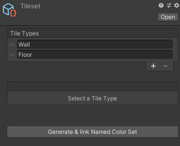
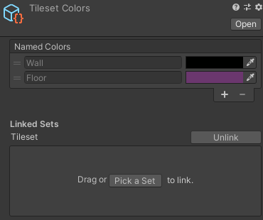
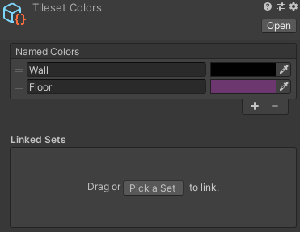

Linking a named color set to tilesets/prefab sets
Having to keep your Named Color Set synchronized with a Tileset or Prefab Set can be a bit tedious and error-prone. To avoid having to add, remove or rename a named color for each tile/prefab type you add, remove or rename, you can instead link tilesets and prefab sets to named color sets.
Let's take a look at the ways you can link sets.
Create & link Named Color Set
This is the easiest way to create a new Named Color Set that you want to link to an existing tileset or prefab set:
- Select the tileset or prefab set in the project window.
- Click "Create & link Named Color Set".
You should now see a new Named Color Set appear in the project window.
Let's say we're using this tileset to create and link a new named color set: 
The resulting named color set will look something like this: 
The colors might be different as they are chosen as random.
Things to note:
- If you add a new tile type or prefab type in the linked set, a new named color will be added to the named color set.
- If you remove or rename a tile type or prefab type, the linked color name will be renamed or removed as well.
- You can't remove or rename linked colors.
- You can still change the colors of the linked names.
- You can still add new (unlinked) colors, which you can rename and remove.
- The bottom part of the inspector window will show the linked sets. This is where you can link more sets.
Link existing sets
If you have an existing named color set that you want to link with a tileset or prefab set:
- Select the color set asset in the project window.
- Either click "Pick a Set" and double-click the set you want to link or drag that set from the project window onto the box.
Unlinking sets
If you no longer want a set to be linked to the named color set. Simply click "Unlink" in the inspector window.
You'll notice the colors won't be removed, but instead you can now rename and remove them: 
If you change your mind and want to link the set again, you can simply using the method described in the previous section.
Linking multiple sets
You can have multiple tilesets and prefab sets linked to a single named color set. This can be useful if you have a graph that generates both tiles and GameObjects from prefabs, for example.
To see which color is linked to which set(s), a tooltip is displayed, containing this information, when hovering over the color's name.
Here's how conflicts between multiple linked sets are avoided:
- If a type is added to linked set A that, with a name that already exists in linked set B, both sets will be linked to the same named color.
- A named color will only be removed along with the linked type if a type with the same name doesn't exist in any other linked sets.
- When renaming a type in linked set A, with a name that also exists in linked set B, the named color won't be deleted, but the it will unlinked from linked set A and a new color is created and linked to set A instead.
If this sounds complicated, don't worry about it. The important thing to note is, that the behaviour listed here will make sure that changes made to one linked set won't interfere with another.